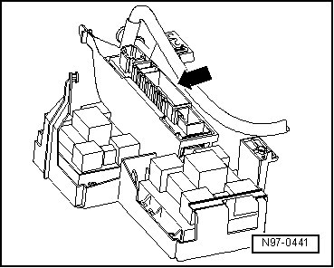

Vehicle Electrical System Control Module
Vehicle Electrical System Control Module
Vehicle Electrical System Control Module (J519) - arrow - is located under instrument cluster, at left.

• Additional information:
General Description:
Vehicle Electrical System Control Module (J519) has the following tasks in the vehicle:
• Electric load management
• Parking lamp
• Low beam
• Running lamp
• Turn signal (not in outside mirror)
• High beam headlamp
• Auxiliary high beam
• Fog Lamps
• Footwell Lamps
• Dimming, instrument illumination
• Indicator lamp for emergency flasher
• Relay for headlamp washer system
• Fuel Pump (FP) supply
• Horn
• Dual washer pump
• Interior lamp
• Voltage supply for Rain/Light sensor
Some of the functions listed above can be adapted:
• "Tap signaling","comfort-flashing", or " highway signaling" means that turn signals are activated multiple times (1-5 times) when turn signal lever is tapped once (signal cycles).
• Adapting signal cycles for "tap signaling" --> [ Tap Signaling Signal Cycles, Adapting ] Testing and Inspection
• Adapting "activation times of headlamp cleaning system" --> [ Headlamp Washer System Activation Time, Adapting ] Testing and Inspection
• Adapting "shut-off priority of electrical consumers" --> [ Electrical Consumer Shut-Off Priority, Adapting ] Testing and Inspection
DTC recognition and display:
Vehicle Electrical System Control Module (J519) is equipped with On Board Diagnostics (OBD) which assists troubleshooting.
For troubleshooting, use Vehicle Diagnostic, Testing and Information System (VAS 5051A) in operating mode " Guided Fault Finding".
Vehicle Electrical System Control Module (J519) must be coded under the following conditions:
• Changes were made to vehicle equipment.
• One particular functionality is to be changed.
• Vehicle Electrical System Control Module (J519) is to be replaced.
- Code Vehicle Electrical System Control Module (J519) --> [ Vehicle Electrical System Control Module, Coding ] Programming and Relearning.